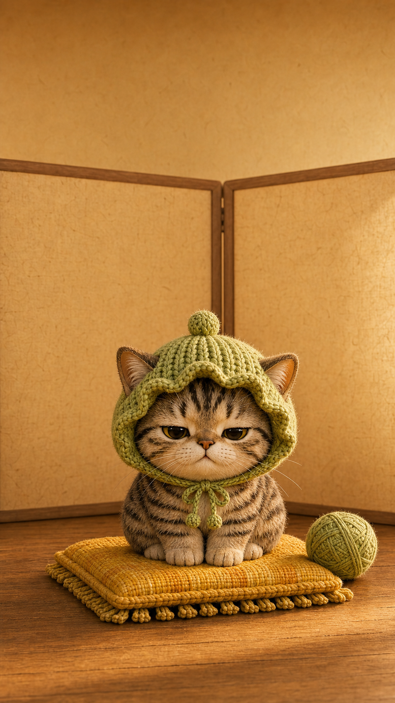
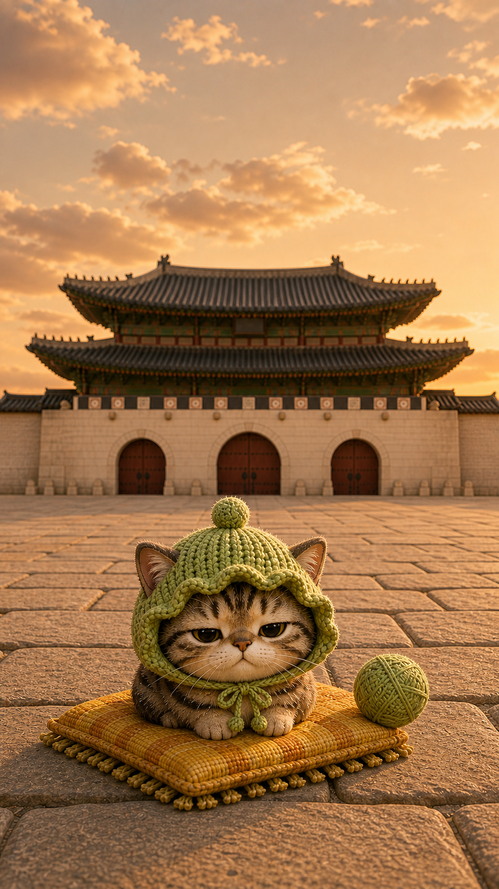
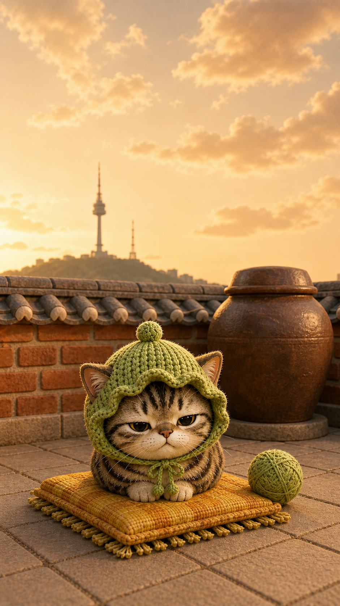
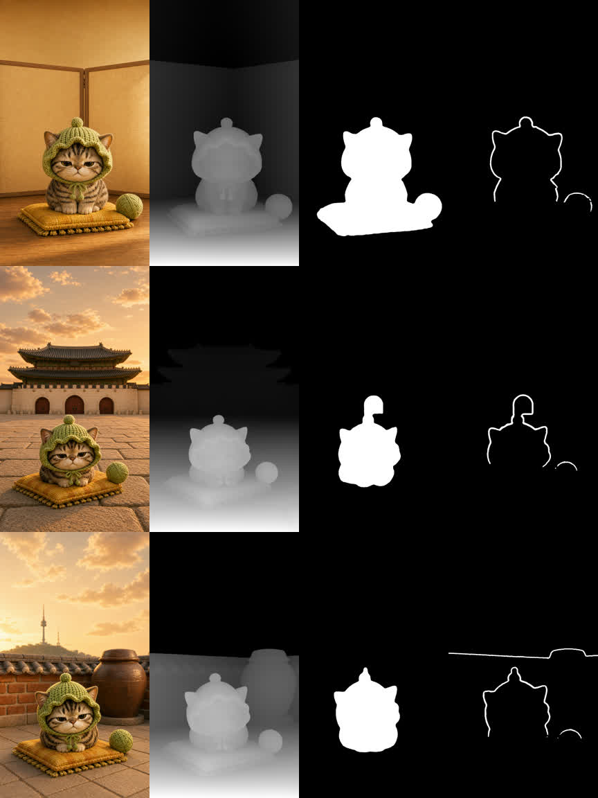

foreground는 고양이와 쿠션, midground는 큰 소품 1-2개, background는 벽/담장/랜드마크 한 덩어리로 제한한다.
Non-negotiables
생성 전에 고정할 제작 규칙
아래 규칙을 모든 imagegen 프롬프트에 반복해서 넣는다. 목적은 예쁜 한 장이 아니라 고양이 사진 업로드 후 3D-photo/depth/live wallpaper로 안정적으로 변환되는 원본을 얻는 것이다.
depth map이 흐려지지 않도록 shallow depth of field, bokeh, dreamy blur, haze, fog 같은 표현을 쓰지 않는다.
거울, 유리벽, 물 반사, 크롬 금속, 화면 반사는 depth 추출을 헷갈리게 하므로 금지하거나 아주 작게만 둔다.
tatami, shoji, torii, shrine, kimono, onsen, Japanese tea room 같은 단어를 피하고, 한옥 마당, 보자기, 장독, 궁궐 담장, 서울 성곽을 쓴다.
모든 산출물은 vertical 9:16 full-bleed wallpaper. UI, 시계, 텍스트, 워터마크, 로고는 넣지 않는다.
작은 고양이, 니트 모자, 따뜻한 저녁빛, 손으로 만든 디오라마, 과하지 않은 한국 생활감이 중심이다.
Base prompt block
모든 생성에 붙일 공통 프롬프트
매시간 A/B 안의 배경만 바꾸고, 이 공통 블록은 유지한다.
9:16 vertical full-bleed Galaxy live lockscreen wallpaper concept.
Premium handcrafted miniature Korean diorama, warm original Cat Lock mood.
One personalized cat hero: squat chibi tabby cat, oversized round head, tiny body, cute sleepy-grumpy face.
Keep the green crochet bonnet with scalloped edge and pom-pom ties, mustard woven cushion, and one green yarn ball.
Depth-safe composition: exactly three clean planes.
Foreground: cat and cushion, sharp silhouette.
Midground: one or two large matte props only.
Background: one simple wall, room surface, courtyard, or landmark silhouette.
Sharp edges, clear object separation, matte clay/felt/wood/paper textures.
No phone UI, no clock, no readable text, no logo, no watermark.
No bokeh, no heavy blur, no haze, no smoke, no mirrors, no reflective glass, no water reflection.
Not Japanese: avoid tatami, shoji, torii, shrine, kimono, onsen, Japanese tea room.
Avoid tiny wires, crowds, many small props, transparent objects, complex signage.Hourly strategy
오늘 밤 9시까지 매시간 2개씩 만들 전략
각 슬롯은 A/B 두 장만 생성한다. 생성 후에는 1장이라도 depth-safe 기준을 통과하지 못하면 그 슬롯은 더 복잡하게 만들지 말고 같은 배경을 단순화해서 재생성한다.
A. 한옥 마당 오후빛
낮은 돌마루, 장독 1개, 흙담 한 면. 고양이와 담장 사이 깊이를 명확히 둔다.
B. 한국 아파트 방 창가
무지 커튼, 낮은 러그, 큰 창틀. 실내지만 원본처럼 따뜻하고 조용하게.
A. 경복궁 근정전 마당
고양이는 전경, 넓은 석조 마당은 중경, 근정전은 단순한 원경 실루엣.
B. 서울 성곽 낮은 담
성곽 돌담 한 줄과 하늘. 랜드마크 느낌은 있지만 선과 소품은 적게.
A. 책상 위 보자기 천
보자기 패턴은 크게, 소품은 연필꽂이 1개만. 종이/천 질감으로 matte하게.
B. 침대 옆 낮은 조명
램프, 쿠션, 벽면만 사용. 그림자 형태가 분명하게 나오게 한다.
A. 옥상 화분 두 개
현재 서울 골목보다 단순하게, 화분 2개와 낮은 난간만 둔다. 먼 도시는 흐리지 않는다.
B. 작은 동네 세탁방
원형 세탁기 문은 거울처럼 쓰지 않고 matte한 큰 원형 오브젝트로만 처리.
A. 장마철 방 안
비는 창밖 평면 패턴으로만. 유리 반사 없이 커튼, 창틀, 고양이만 명확하게.
B. 눈 온 한옥 담장
눈은 큰 면으로 단순화. 안개/입김/연기 없이 담장과 마당의 깊이만 사용.
A. 덕수궁 돌담길
돌담 한 면, 낙엽 몇 장, 벤치 하나. 사람과 차량은 넣지 않는다.
B. 남산 팔각정 실루엣
팔각정은 원경 단순 실루엣. 전경은 나무 데크와 고양이만.
A. 크래프트룸
가위, 실타래, 천 조각 중 2개만. 고양이 털/모자/천의 tactile 감성 유지.
B. 작은 부엌 아침빛
그릇 하나, 나무 상판, 흰 벽. 음식 디테일은 넣지 않는다.
A. 무지 배경 스튜디오
벽, 바닥, 고양이, 쿠션만. 개인 고양이 인식성과 depth 품질 기준점으로 사용.
B. 패브릭 커튼 방
커튼 folds는 크게, 소품은 작은 책 한 권만. 수면 전 잠금화면 후보.
A. 레트로 게임방
화면 글자 금지. CRT는 반사 없이 무광 발광 사각형으로만.
B. 음악방
레코드 반사 금지. 큰 스피커 1개, 무광 선반, 고양이만 사용.
A. 제주 돌담과 풀밭
돌담, 풀밭, 하늘 3면. 바다 반사나 복잡한 관광지는 피한다.
B. 소나무 피크닉 매트
나무 한 그루, 매트, 고양이. 솔잎은 뭉치로 단순화한다.
A. 달빛 창가
창틀과 벽면, 고양이. 달은 큰 원형 배경으로만, 별/구름 과다 금지.
B. 담요 위 낮은 램프
배경은 무지 벽. 담요의 큰 주름과 고양이 silhouette로 깊이를 만든다.
A. 경복궁 최종안
10:00의 경복궁을 더 단순화한 최종 후보. depth 품질 우선.
B. 원본 감성 방 안 최종안
원본의 따뜻함을 실내로 옮긴 최종 후보. 최소 소품, 최대 안정성.
QA gate
매시간 산출물 통과 기준
생성 후 이 기준을 통과한 것만 페이지에 누적한다.
- 9:16세로 9:16이고 고양이가 잘리지 않는다.
- Depth전경/중경/배경이 눈으로 분리된다.
- No blur강한 보케, haze, 안개, 반사가 없다.
- Korean일본적 소품/건축 신호가 없다.
- Original mood따뜻한 디오라마 감성과 작은 고양이 중심이 유지된다.
Generated and verified
17:00 레퍼런스 고정 재생성
이전 단순 스튜디오 방향은 원본 레퍼런스와 어긋나서 폐기했다. 이번 라운드는 치비 체형, 뚱한 표정, 니트 보닛, 노란 방석을 고정하고 배경만 바꿔 실제 depth 파이프라인과 WebGL 월페이퍼 모드로 검증했다.

PASS / algorithm
1700-a. 온돌방
고양이 스타일과 subject mask는 좋다. 다만 배경이 얌전해서 다음 실내안은 한국적 배경 신호를 한 덩어리만 더 넣는다.
WebGL scene
PASS / style + depth
1700-b. 경복궁
원본의 고양이 감성과 한국 랜드마크 확장이 동시에 살아 있다. depth/cliff도 배경 파손이 적어 현재 라운드의 우선 후보로 둔다.
WebGL scene
FAIL / cliff line
1700-c. 장독대 옥상
장면 매력은 좋지만 cliff mask에 긴 담장 가로선이 떠서 자이로 이동 시 배경 경계가 튈 수 있다. 다음 라운드에서는 낮은 담을 더 멀리 보내거나 큰 벽면 하나로 단순화한다.
WebGL scene
Build log
진행 방식
이후 매시간 해당 슬롯의 A/B 두 장만 imagegen으로 만들고, 통과한 이미지만 아래 로그에 추가한다. 복잡해지는 방향이면 즉시 같은 배경을 더 단순하게 재생성한다.
Time
Action
Output
Decision
09:46
Reset
Generation paused. Strategy rewritten for depth-safe Korean diorama variations.
No more bulk generation; create two images per hour only.
16:00
Rejected
Simple studio/room direction was too serious and not close enough to the original chibi reference.
Fail: style mismatch. Prompt tightened around squat chibi cat, bonnet, cushion, yarn.
17:12
Imagegen
Generated 3 reference-locked candidates: ondol room, Gyeongbokgung, rooftop jangdokdae.
All kept 9:16. Cat expression and proportions now match the original reference direction.
17:20
Algorithm QA
Ran make_scene.sh for all 3 and reviewed depth, subject mask, cliff mask.
Pass: 1700-a, 1700-b. Fail: 1700-c due long horizontal cliff line.
17:23
WebGL QA
Captured wallpaper-mode previews with fixed parallax offset.
No blank render. 1700-b is the current strongest candidate.